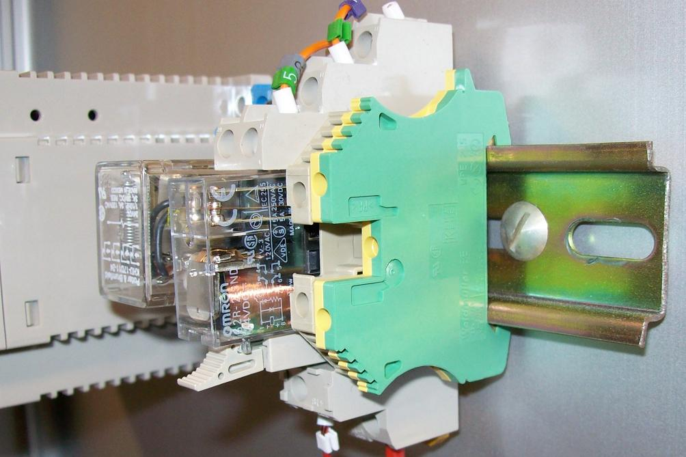

Find why a 24 V panel resets when a load switches
Use a 5 V trainer to produce a shared voltage drop. Then read a commercial branch-protection fault without shorting a supply.
Find the supply, the branches and the shared return
A commercial controls cabinet can run a PLC, communication devices, field sensors and solenoids from nominal 24 V DC. Find the supply output, sized branch protective devices and return path. Startup inrush, a weak connection or a shared supply going into current limit can reset the entire cabinet. An electronic circuit protector monitors a branch and may report which channel tripped. Prove which voltages remained healthy in the incident. T46 · Shared paths, protection and data quality.

Photo by Angga Panca Alam Anugrah, Wikimedia thumbnail, with on-page callouts. Original photo · CC BY-SA 4.0.


Photo by Ulfbastel, public domain.

Watch Phoenix Contact’s CAPAROC installation demonstration. Find the feed-in module and separate protected outputs. Then locate the channel indicator and reset information in the datasheet. Phoenix Contact’s CAPAROC installation demonstration on YouTube.
The panel photo shows the surrounding equipment. Use the product gallery to identify the removable power feed, channel buttons and status lights on the electronic protector itself. Phoenix Contact CAPAROC equipment photos and modules.
Reproduce a shared voltage drop at 5 V
Use a current-limited isolated 5 V source, a voltmeter, a 22 Ω series resistor rated at least 0.25 W, a 1 kΩ load, a 100 Ω load rated at least 0.5 W and a switch. Use components rated for their worst-case power. Set the current limit to around 70 mA for these components and suitably rated wiring. The expected test load is at most 55 mA. The trainer represents a degraded shared feed. It contains no commercial protection module.
With power off, connect the 22 Ω resistor between +5 V and the load node. Connect 1 kΩ from the load node to return. Connect the second branch from the same node through the switch and 100 Ω back to return. Leave the switch open. Set the meter to DC volts and read at the source and at the two ends of the 22 Ω feed.
Close the 100 Ω load switch. The ideal source stays 5 V but the load node drops from about 4.89 V to 4.03 V. Measure both and the voltage across the shared resistor. Open the switch and check that the original value returns. There is no direct short in this trainer.
Power off and replace the 22 Ω series resistor with a suitable jumper. Repeat and compare. In a real incident the shared resistance might be a poor termination or an undersized feed and return. The source can also fold back when total demand exceeds its capability. Record where each voltage was measured.
Read a cabinet fault record
| Observed behaviour | First check |
|---|---|
| Supply terminals remain near rated voltage. PLC input voltage falls when a solenoid switches. | Check the shared positive feed and return under load. Compare voltage at the source and load terminals. |
| Supply itself droops and several branches reset together. | Compare total load, inrush and supply limit, then repeat with logged voltage at the supply. Review the documented response and capture fast events with suitable instruments. |
| One electronic branch trips, the PLC and the other channels stay up. | Read the alarm, channel rating and trip characteristic. Isolate and diagnose that downstream load under the site procedure before restoring. |
The fuse or electronic protector must suit the wiring, supply, load inrush and fault current. Changing its setting to hide repeated trips can defeat the protection. Read the exact time/current characteristic and supply manual when planning real work. Phoenix Contact’s two-channel example with shutdown-time data.
Save three lines of measurements at source and load. Identify the common path in your drawing. Give a different diagnostic next step for an individual branch trip and a shared supply dropout.